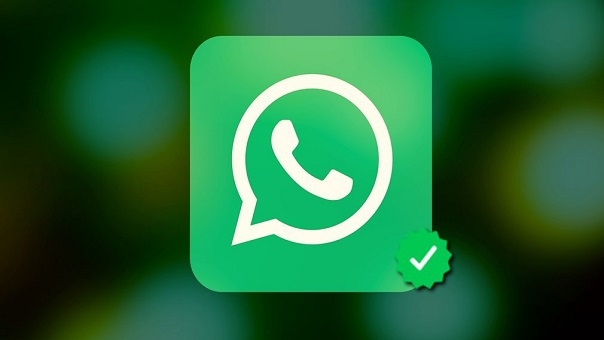

La publicación y visualización de video en Facebook ha crecido en los últimos años. Desafortunadamente, muchos de los que se suben a la red social cuentan con música de la que la compañía no tiene los derechos, ni tampoco el usuario. Bajo la ley actual, los titulares de derechos deben pedir a Facebook que elimine videos con material infractor.
-
Facebook te ayudará a encontrar
Wi-Fi GRATIS.
-

WhatsApp anuncia la llegada de cuentas
oficiales para empresas.
-

YouTube se rediseña y cambia por
primera vez su logo.
-

Primeros videos de Facebok Tv
llegaron en Agosto.